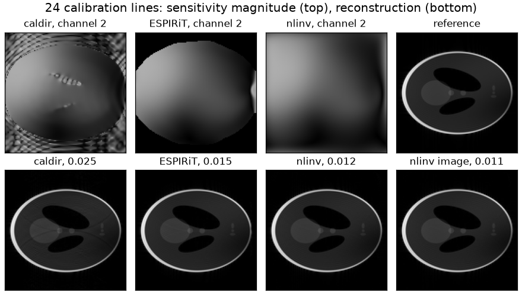
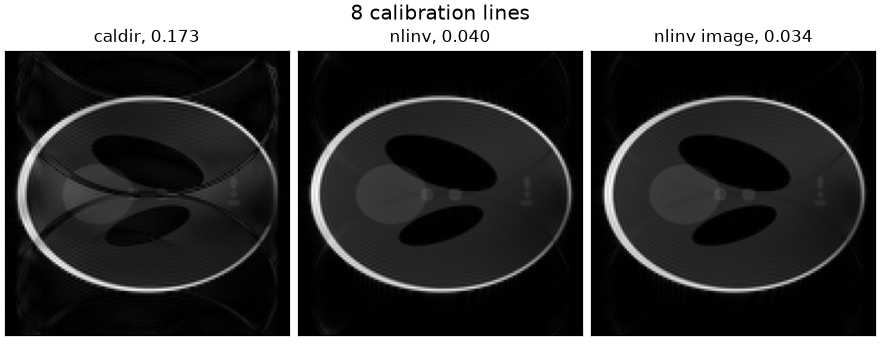

Note
Go to the end to download the full example code.
Coil sensitivity calibration#
Three estimates of the receive sensitivities of a coil array from the same undersampled Cartesian acquisition, and the SENSE reconstructions they lead to.
A SENSE reconstruction [1] inverts
and is only as accurate as the sensitivities \(S_c\) it is given. They are usually estimated from the acquisition itself, from a fully sampled region at the centre of k-space, the autocalibration region. The three estimators compared here differ in what they take from the data:
bartorch.tools.caldir()divides each low-resolution coil image, from the calibration region alone, by their root sum of squares;bartorch.tools.ecalib()(ESPIRiT [2]) takes the sensitivities as the eigenvectors of an operator built from the calibration region;bartorch.tools.nlinv()(nonlinear inversion [3]) estimates the sensitivities and the image jointly from all acquired samples, with the calibration region only as part of the data.
The previous lesson, From k-space to image, used ESPIRiT with a calibration region of 24 lines. This lesson varies that region.
Learning objectives
Estimate coil sensitivities with
caldir,ecalibandnlinv, and use each inbartorch.apps.pics().Evaluate a reconstruction against a noise-free reference within the object support.
State why ESPIRiT requires a calibration region larger than its kernel, and why nonlinear inversion does not.
The next lesson, Nonlinear inversion, writes nonlinear inversion out as a nonlinear operator and a Gauss-Newton solver.
import torch
import bartorch
import bartorch.tools as bt
from bartorch import apps
SIZE = 128
COILS = 8
ACCELERATION = 3
Data#
The k-space is BART’s analytical Shepp-Logan phantom seen through its analytical head coil, evaluated in k-space rather than transformed from a sampled image (Tensors and commands), so the reconstructions below do not share the discretization of the simulation. Complex Gaussian noise of variance 2 is added to every sample.
The reference is the root sum of squares of the fully sampled, noise-free coil images, and every error is the NRMSE of a magnitude image within the phantom’s support, after a least-squares fit of a global scale.
clean = bt.phantom(SIZE, coils=COILS, kspace=True)
kspace = bt.noise(clean, n=2.0, s=3)
reference = bartorch.rss(bartorch.ifft(clean, axes=(-2, -1)), axes=(0,))[0].abs()
support = (bt.phantom(SIZE).abs() > 0).to(torch.float32)
def error(estimate):
"""NRMSE of a magnitude image within the phantom's support."""
return bt.nrmse(reference * support, estimate.abs().squeeze() * support, scaled=True)
Every third phase encode is acquired, and a central block of calibration
lines is acquired in full. Regular undersampling folds the image into three
overlapping copies, which only the sensitivities can separate.
encodes = torch.arange(SIZE) - SIZE // 2
def acquire(calibration):
"""The regularly undersampled k-space with a fully sampled central block."""
lines = (encodes % ACCELERATION == 0) | (encodes.abs() < calibration // 2)
return kspace * lines.to(torch.complex64).reshape(SIZE, 1)
measured = acquire(24)
print(f"{float(bt.pattern(measured).real.mean()):.0%} of k-space acquired")
46% of k-space acquired
Three calibrations#
ESPIRiT’s crop sets the sensitivities to zero where the eigenvalue of the
calibration operator falls below it, which removes the background from the
reconstruction. nlinv counts Gauss-Newton steps, and its regularization
decreases with every step, so the count acts as a regularization parameter;
twelve steps suit this noise level. Its sensitivities are normalized here to
unit root sum of squares, the normalization the other two estimators use.
direct = bt.caldir(measured, 24)
espirit = bt.ecalib(measured, maps=1, calib_size=24, crop=0.8)
joint, estimated = bt.nlinv(measured, maxiter=12, return_sensitivities=True)
nonlinear = estimated / bartorch.rss(estimated, axes=(0,), keepdim=True).abs().clamp(min=1e-6)
print(
f"caldir {tuple(direct.shape)}, ecalib {tuple(espirit.shape)}, nlinv {tuple(nonlinear.shape)}"
)
caldir (8, 1, 128, 128), ecalib (8, 1, 128, 128), nlinv (8, 1, 128, 128)
All three are (coils, 1, y, x): the sensitivities of one set of maps.
Each is given to bartorch.apps.pics() with the same Tikhonov weight and
number of conjugate-gradient iterations, so that the reconstructions differ
only in the sensitivities.
reconstructions = {
name: apps.pics(measured, maps, l2=0.001, maxiter=40)
for name, maps in (("caldir", direct), ("ESPIRiT", espirit), ("nlinv", nonlinear))
}
reconstructions["nlinv image"] = joint
for name, estimate in reconstructions.items():
print(f"{name:>12} NRMSE {error(estimate):.3f}")
caldir NRMSE 0.025
ESPIRiT NRMSE 0.015
nlinv NRMSE 0.012
nlinv image NRMSE 0.011

With 24 calibration lines the three estimates agree inside the object. They
differ outside it, where the data do not determine a sensitivity: caldir
extends a smooth estimate into the background, ESPIRiT sets it to zero, and
nlinv extrapolates the smooth function its regularization favours.
A smaller calibration region#
ESPIRiT builds its calibration matrix from every position of a kernel, six
samples wide by default, inside the calibration region. Eight lines leave
three kernel positions along the phase-encoding axis, and from this data
ecalib returns sensitivities that are zero in every voxel, which no
reconstruction can use. caldir still runs, on an image of eight lines’
resolution. nlinv uses every acquired sample, so the calibration region
affects it only through the first steps of the iteration.
scarce = acquire(8)
espirit = bt.ecalib(scarce, maps=1, calib_size=8, crop=0.8)
print(f"ESPIRiT: {float((espirit.abs() > 0).float().mean()):.0%} of voxels with a sensitivity")
direct = bt.caldir(scarce, 8)
joint, estimated = bt.nlinv(scarce, maxiter=12, return_sensitivities=True)
nonlinear = estimated / bartorch.rss(estimated, axes=(0,), keepdim=True).abs().clamp(min=1e-6)
scarce_reconstructions = {
"caldir": apps.pics(scarce, direct, l2=0.001, maxiter=40),
"nlinv": apps.pics(scarce, nonlinear, l2=0.001, maxiter=40),
"nlinv image": joint,
}
for name, estimate in scarce_reconstructions.items():
print(f"{name:>12} NRMSE {error(estimate):.3f}")
ESPIRiT: 0% of voxels with a sensitivity
caldir NRMSE 0.173
nlinv NRMSE 0.040
nlinv image NRMSE 0.034

With eight calibration lines the direct estimate leaves residual aliasing,
because a sensitivity estimated at that resolution does not represent the
coil profiles closely enough to unfold three copies. The sensitivities from
nonlinear inversion still unfold the image. The same estimator applies to
non-Cartesian data, where no Cartesian calibration region exists, as
bartorch.tools.ncalib(), which Radial SENSE reconstruction
uses.
The errors above are for one phantom, one noise level and one sampling pattern, and they depend on the regularization of each reconstruction; they do not rank the estimators in general.
References#
Total running time of the script: (0 minutes 6.553 seconds)